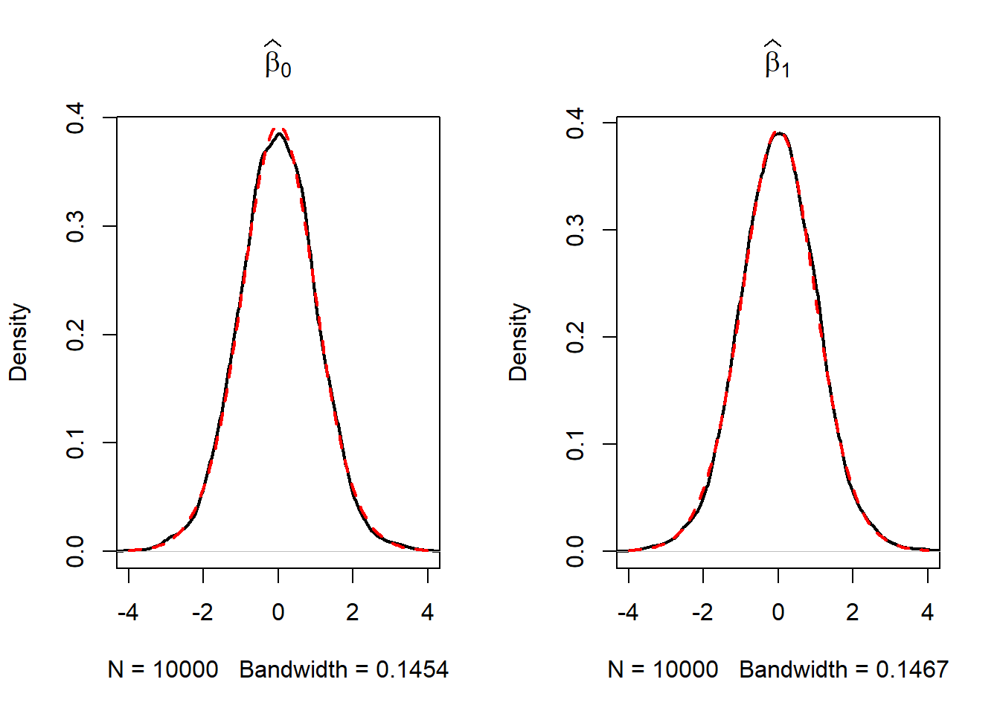

2.2 Time Series Data and Serial Correlation
GDP is commonly defined as the value of goods and services produced over a given time period. The data set us_macro_quarterly.xlsx is provided by the authors and can be downloaded here. It provides quarterly data on U.S. real (i.e. inflation adjusted) GDP from 1947 to 2004.
As before, a good starting point is to plot the data. The package quantmod provides some convenient functions for plotting and computing with time series data. We also load the package readxl to read the data into R.
# attach the package 'quantmod'
library(quantmod)We begin by importing the data set.
# load US macroeconomic data
USMacroSWQ <- read_xlsx("Data/us_macro_quarterly.xlsx",
sheet = 1,
col_types = c("text", rep("numeric", 9)))
# format date column
USMacroSWQ$X__1 <- as.yearqtr(USMacroSWQ$X__1, format = "%Y:0%q")
# adjust column names
colnames(USMacroSWQ) <- c("Date", "GDPC96", "JAPAN_IP", "PCECTPI",
"GS10", "GS1", "TB3MS", "UNRATE", "EXUSUK", "CPIAUCSL")We the first column of us_macro_quarterly.xlsx contains text and the remaining ones are numeric. Using col_types = c(“text”, rep(“numeric”, 9)) we tell read_xlsx() take this into account when importing the data.
It is useful to work with time-series objects that keep track of the frequency of the data and are extensible. In what follows we will use objects of the class xts, see ?xts. Since the data in USMacroSWQ are in quarterly frequency we convert the first column to yearqtr format before generating the xts object GDP.
# GDP series as xts object
GDP <- xts(USMacroSWQ$GDPC96, USMacroSWQ$Date)["1960::2013"]
# GDP growth series as xts object
GDPGrowth <- xts(400 * log(GDP/lag(GDP)))The following code chunks reproduce Figure 14.1 of the book.
# reproduce Figure 14.1 (a) of the book
plot(log(as.zoo(GDP)),
col = "steelblue",
lwd = 2,
ylab = "Logarithm",
xlab = "Date",
main = "U.S. Quarterly Real GDP")
# reproduce Figure 14.1 (b) of the book
plot(as.zoo(GDPGrowth),
col = "steelblue",
lwd = 2,
ylab = "Logarithm",
xlab = "Date",
main = "U.S. Real GDP Growth Rates")
Notation, Lags, Differences, Logarithms and Growth Rates
For observations of a variable \(Y\) recorded over time, \(Y_t\) denotes the value observed at time \(t\). The period between two sequential observations \(Y_t\) and \(Y_{t-1}\) is a unit of time: hours, days, weeks, months, quarters, years etc. Key Concept 14.1 introduces the essential terminology and notation for time series data we use in the subsequent sections.
Key Concept 14.1
Lags, First Differences, Logarithms and Growth Rates
Previous values of a time series are called lags. The first lag of \(Y_t\) is \(Y_{t-1}\). The \(j^{th}\) lag of \(Y_t\) is \(Y_{t-j}\). In r ttcode(“R”), lags of univariate or multivariate time series objects are conveniently computed by lag(), see ?lag.
Sometimes we work with a differenced series. The first difference of a series is \(\Delta Y_{t} = Y_t - Y_{t-1}\), the difference between periods \(t\) and \(t-1\). If Y is a time series, the series of first differences is computed as diff(Y).
It may be convenient to work with the first difference in logarithms of a series. We denote this by \(\Delta \log(Y_t) = \log(Y_t) - \log(Y_{t-1})\). For a time series Y, this is obtained using log(Y/lag(Y)).
\(100 \Delta \log (Y_t)\) is an approximation for the percentage change between \(Y_t\) and \(Y_{t-1}\).
The definitions made in Key Concept 14.1 are useful because of two properties that are common to many economic time series:
Exponential growth: some economic series grow approximately exponentially such that their logarithm is approximately linear.
The standard deviation of many economic time series is approximately proportional to their level. Therefore, the standard deviation of the logarithm of such a series is approximately constant.
Furthermore, it is common to report growth rates in macroeconomic series which is why \(\log\)-differences are often used.
Table 14.1 of the book presents the quarterly U.S. GDP time series, its logarithm, the annualized growth rate and the first lag of the annualized growth rate series for the period 2012:Q1 - 2013:Q1. The following simple function can be used to compute these quantities for a quarterly time series series.
# compute logarithms, annual growth rates and 1st lag of growth rates
quants <- function(series) {
s <- series
return(
data.frame("Level" = s,
"Logarithm" = log(s),
"AnnualGrowthRate" = 400 * log(s/lag(s)),
"1stLagAnnualGrowthRate" = lag(400 * log(s/lag(s))))
)
}The annual growth rate is computed using the approximation \[Annual Growth Y_t = 400 \cdot\Delta\log(Y_t)\] since \(100\cdot\Delta\log(Y_t)\) is an approximation of the quarterly percentage changes, see Key Concept 14.1.
We call quants() on observations for the period 2011 Q3 - 2013 Q1.
# obtain a data.frame with level, logarithm, annual growth rate and its 1st lag of GDP
quants(GDP["2011-07::2013-01"])## Level Logarithm AnnualGrowthRate X1stLagAnnualGrowthRate
## 2011 Q3 15062.14 9.619940 NA NA
## 2011 Q4 15242.14 9.631819 4.7518062 NA
## 2012 Q1 15381.56 9.640925 3.6422231 4.7518062
## 2012 Q2 15427.67 9.643918 1.1972004 3.6422231
## 2012 Q3 15533.99 9.650785 2.7470216 1.1972004
## 2012 Q4 15539.63 9.651149 0.1452808 2.7470216
## 2013 Q1 15583.95 9.653997 1.1392015 0.1452808Autocorrelation
Observations of a time series are typically correlated. This type of correlation is called autocorrelation or serial correlation. Key Concept 14.2 summarizes the concepts of population autocovariance and population autocorrelation and shows how to compute their sample equivalents.
Key Concept 14.2
Autocorrelation and Autocovariance
The covariance between \(Y_t\) and its \(j^{th}\) lag, \(Y_{t-j}\), is called the \(j^{th}\) autocovariance of the series \(Y_t\). The \(j^{th}\) autocorrelation coefficient, also called the serial correlation coefficient, measures the correlation between \(Y_t\) and \(Y_{t-j}\).
We thus have \[\begin{align*} j^{th} \text{autocovariance} =& \, Cov(Y_t,Y_{t-j}), \\ j^{th} \text{autocorrelation} = \rho_j =& \, \rho_{Y_t,Y_{t-j}} = \frac{Cov(Y_t,Y_{t-j)}}{\sqrt{Var(Y_t)Var(Y_{t-j})}}. \end{align*}\]Population autocovariance and population autocorrelation can be estimated by \(\widehat{Cov(Y_t,Y_{t-j})}\), the sample autocovariance, and \(\widehat{\rho}_j\), the sample autocorrelation:
\[\begin{align*} \widehat{Cov(Y_t,Y_{t-j})} =& \, \frac{1}{T} \sum_{t=j+1}^T (Y_t - \overline{Y}_{j+1:T})(Y_{t-j} - \overline{Y}_{1:T-j}), \\ \widehat{\rho}_j =& \, \frac{\widehat{Cov(Y_t,Y_{t-j})}}{\widehat{Var(Y_t)}} \end{align*}\]_{j+1:T} denotes the average of \(Y_{j+1}, Y{j+2}, \dots, Y_T\).
In R the function acf() from the package stats computes the sample autocovariance or the sample autocorrelation function.
Using acf() it is straightforward to compute the first four sample autocorrelations of the series GDPGrowth.
acf(na.omit(GDPGrowth), lag.max = 4, plot = F)##
## Autocorrelations of series 'na.omit(GDPGrowth)', by lag
##
## 0.00 0.25 0.50 0.75 1.00
## 1.000 0.352 0.273 0.114 0.106This is evidence that there is mild positive autocorrelation in the growth of GDP: if GDP grows faster than average in one period, there is a tendency for it to grow faster than average in the following periods.
Other Examples of Economic Time Series
Figure 14.2 of the book presents four plots: the U.S. unemployment rate, the U.S. Dollar / British Pound exchange rate, the logarithm of the Japanese industrial production index as well as daily changes in the Wilshire 5000 stock price index, a financial time series. The next code chunk reproduces the plots of the three macroeconomic series and adds percentage changes in the daily values of the New York Stock Exchange Composite index as a fourth one (the data set NYSESW comes with the AER package).
# define series as xts objects
USUnemp <- xts(USMacroSWQ$UNRATE, USMacroSWQ$Date)["1960::2013"]
DollarPoundFX <- xts(USMacroSWQ$EXUSUK, USMacroSWQ$Date)["1960::2013"]
JPIndProd <- xts(log(USMacroSWQ$JAPAN_IP), USMacroSWQ$Date)["1960::2013"]
data("NYSESW")
NYSESW <- xts(Delt(NYSESW))par(mfrow = c(2, 2))
plot(as.zoo(USUnemp),
col = "steelblue",
lwd = 2,
ylab = "Percent",
xlab = "Date",
main = "US Unemployment Rate",
cex.main = 1)
plot(as.zoo(DollarPoundFX),
col = "steelblue",
lwd = 2,
ylab = "Dollar per pound",
xlab = "Date",
main = "U.S. Dollar / B. Pound Exchange Rate",
cex.main = 1)
plot(as.zoo(JPIndProd),
col = "steelblue",
lwd = 2,
ylab = "Logarithm",
xlab = "Date",
main = "Japanese Industrial Production",
cex.main = 1)
plot(as.zoo(NYSESW),
col = "steelblue",
lwd = 2,
ylab = "Percent per Day",
xlab = "Date",
main = "New York Stock Exchange Composite Index",
cex.main = 1)
The series show quite different characteristics. The unemployment rate increases during recessions and declines during economic recoveries and growth. The Dollar/Pound exchange rates shows a deterministic pattern until the end of the Bretton Woods system. Japan’s industrial production exhibits an upward trend and decreasing growth. Daily changes in the New York Stock Exchange composite index seem to fluctuate randomly around the zero line. The sample autocorrelations support this conjecture.
# compute sample autocorrelation for the NYSESW series
acf(na.omit(NYSESW), plot = F, lag.max = 10)##
## Autocorrelations of series 'na.omit(NYSESW)', by lag
##
## 0 1 2 3 4 5 6 7 8 9
## 1.000 0.040 -0.016 -0.023 0.000 -0.036 -0.027 -0.059 0.013 0.017
## 10
## 0.004The first 10 sample autocorrelation coefficients are very close to zero. The default plot generated by acf() provides further evidence.
# plot sample autocorrelation for the NYSESW series
acf(na.omit(NYSESW), main = "Sample Autocorrelation for NYSESW Data")
The blue dashed bands represent values beyond which the autocorrelations are significantly different from zero at \(5\%\) level. Even when the true autocorrelations are zero, we need to expect a few exceedences — recall the definition of a type-I-error from Key Concept 3.5. For most lags we see that the sample autocorrelation does not exceed the bands and there are only a few cases that lie marginally beyond the limits.
Furthermore, the NYSESW series exhibits what econometricians call volatility clustering: there are periods of high and periods of low variance. This is common for many financial time series.